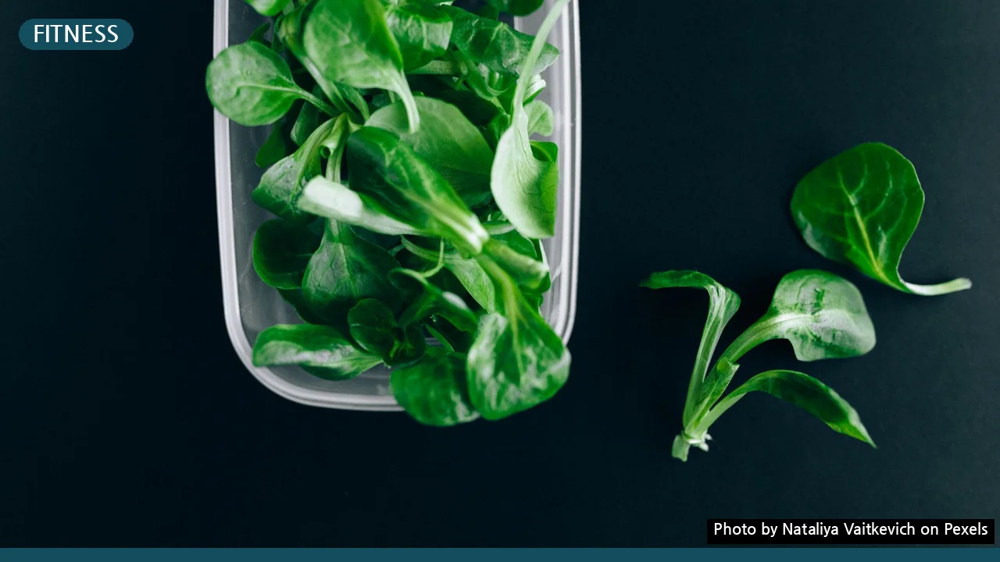
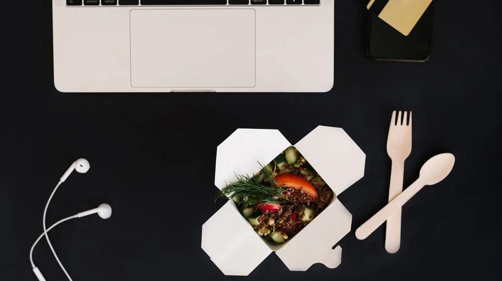

다이어트 도시락, 실패 확률 2배 낮추는 핵심 비결과 성공 레시피
사진: Nataliya Vaitkevich / Pexels (무료 이미지, 출처 표기)
다이어트 도시락, 왜 실패할까요? 성공을 위한 핵심 원칙

다이어트 도시락을 꾸준히 이어가지 못하는 가장 큰 이유는 바로 ‘맛없음’과 ‘번거로움’입니다. 식단 관리를 시작하려 마음먹어도, 매일 똑같고 재미없는 도시락은 금방 질리기 마련입니다. 또한, 준비 과정이 복잡하고 시간이 오래 걸리면 작심삼일로 끝나기 쉽죠.
성공적인 다이어트 도시락을 위해서는 이 두 가지 문제를 해결하는 것이 중요합니다. 맛있고, 준비하기 간편하며, 동시에 영양 균형까지 잡힌 도시락을 만드는 것이 핵심입니다. 단순히 칼로리만 줄이는 것이 아니라, 꾸준히 즐길 수 있는 방법을 찾아야 합니다.
나에게 맞는 영양 균형 도시락 구성: 탄단지 황금비율
건강한 다이어트 도시락의 기본은 탄수화물, 단백질, 지방(이하 탄단지)의 균형입니다. 무작정 탄수화물을 줄이기보다는, 몸에 좋은 복합 탄수화물과 충분한 단백질, 그리고 건강한 지방을 적절히 섭취하는 것이 중요합니다.
일반적으로 다이어트 식단에서는 탄수화물 40~50%, 단백질 30~40%, 지방 20~30%의 비율을 권장합니다. 개인의 활동량과 목표에 따라 조절할 수 있습니다. 예를 들어, 운동량이 많은 경우 단백질 비율을 높일 수 있습니다.
탄단지별 추천 식품
식품을 선택할 때는 가공이 덜 된 자연식품 위주로 구성하는 것이 좋습니다. 첨가물이 많은 가공식품은 피하고, 신선한 재료를 활용해 영양소 손실을 최소화하세요.
빠르고 맛있게! 다이어트 도시락 레시피 아이디어
매일 새로운 도시락을 만들 필요는 없습니다. 몇 가지 간단한 레시피를 정해놓고 반복하거나, 한 번 조리할 때 여러 끼 분량을 미리 준비(밀프렙)하는 것이 시간 절약에 효과적입니다.
- 닭가슴살 샐러드 & 병아리콩: 삶은 닭가슴살을 찢어 다양한 채소(양상추, 파프리카, 오이 등)와 병아리콩을 곁들입니다. 드레싱은 발사믹이나 올리브유를 활용하여 가볍게 뿌려줍니다.
- 곤약 볶음밥: 곤약쌀을 활용해 탄수화물 함량을 낮춘 볶음밥입니다. 잘게 썬 닭가슴살이나 새우, 다양한 채소(양파, 당근, 애호박)를 넣고 굴소스 대신 간장과 후추로 간을 맞춥니다.
- 두부 유부초밥: 밥 대신 으깬 두부를 사용하고, 잘게 다진 채소와 닭가슴살을 섞어 유부피에 채워 넣습니다. 새콤달콤한 맛을 유지하면서도 칼로리를 낮출 수 있습니다.
- 오트밀 죽 & 삶은 계란: 아침 도시락으로 좋은 선택입니다. 오트밀에 우유나 두유를 넣고 끓여 죽처럼 만들고, 삶은 계란으로 단백질을 보충합니다.
조리 시에는 소금이나 설탕 등 첨가물 사용을 최소화하고, 허브나 후추, 레몬즙 등으로 맛을 내는 연습을 해보세요. 에어프라이어나 전자레인지를 활용하면 조리 시간을 단축할 수 있습니다.
다이어트 도시락 준비물, 이것만 있으면 충분해요!
효율적인 도시락 준비를 위해서는 적절한 준비물을 갖추는 것이 중요합니다. 기본적이면서도 실용적인 아이템들을 소개합니다.
- 밀폐용 도시락통: 재료가 섞이지 않도록 칸막이가 있는 형태가 편리합니다. 유리나 스테인리스 재질은 환경호르몬 걱정 없이 위생적으로 사용할 수 있고, 플라스틱은 가볍고 휴대가 용이합니다.
- 보냉백 및 아이스팩: 신선도를 유지하고 식중독 예방을 위해 필수적입니다. 특히 여름철에는 더욱 신경 써야 합니다.
- 소분 용기/드레싱 통: 드레싱이나 소스를 따로 담아 가면 음식의 변질을 막고, 먹기 직전 신선하게 섭취할 수 있습니다.
- 휴대용 수저 세트: 개인 위생을 위해 플라스틱 대신 스테인리스나 대나무 소재의 수저를 준비하는 것이 좋습니다.
- 계량컵 및 저울: 정확한 식단 관리를 위해 재료의 양을 재는 데 도움이 됩니다. 처음에는 번거로울 수 있지만, 익숙해지면 감으로도 조절할 수 있습니다.
준비물을 잘 갖추면 도시락 준비가 한결 수월해지고, 식단 관리의 지속성을 높이는 데 기여할 수 있습니다.
안전하고 신선하게! 도시락 보관 및 휴대 시 주의할 점
정성껏 준비한 도시락이 상하거나 변질되면 건강에 해로울 수 있습니다. 올바른 보관 및 휴대 방법을 통해 안전하게 섭취하세요.
- 철저한 위생 관리: 조리 전후 손을 깨끗이 씻고, 식재료와 조리 도구를 청결하게 유지합니다. 날것과 익힌 것을 분리하여 교차 오염을 방지하세요.
- 신속한 냉장 보관: 조리된 음식은 식힌 후 바로 냉장 보관합니다. 상온에 오래 두면 세균 번식의 위험이 커집니다. 일반적으로 냉장 보관은 2~3일, 냉동 보관은 1주일 이내 섭취하는 것이 안전합니다. 단, 재료에 따라 보관 기간은 달라질 수 있습니다.
- 보냉백 및 아이스팩 활용: 도시락을 운반할 때는 반드시 보냉백과 아이스팩을 사용하여 저온 상태를 유지해야 합니다. 특히 더운 날씨에는 더욱 중요합니다.
- 재가열 시 주의: 데워 먹는 도시락은 완전히 익도록 재가열해야 합니다. 전자레인지 사용 시 용기가 적합한지 확인하고, 뜨거운 김이 골고루 퍼지도록 중간에 한 번 저어주는 것이 좋습니다.
이러한 주의사항을 잘 지켜 건강하고 맛있는 다이어트 도시락 생활을 이어가시길 바랍니다. 특정 질환이 있거나 전문적인 식단 관리가 필요한 경우, 의사 또는 영양사와의 상담을 통해 개인에게 맞는 식단을 구성하는 것을 권장합니다.
🔗 이 글도 함께 보면 좋아요: 스마트폰 배터리 수명 2배 늘리는 법? 놓치기 쉬운 핵심 관리 팁
관련 추천 상품
다이어트 도시락통, 닭가슴살 소시지, 샐러드 드레싱 관련 인기 상품 보러가기
이 포스팅은 쿠팡 파트너스 활동의 일환으로, 이에 따른 일정액의 수수료를 제공받습니다.